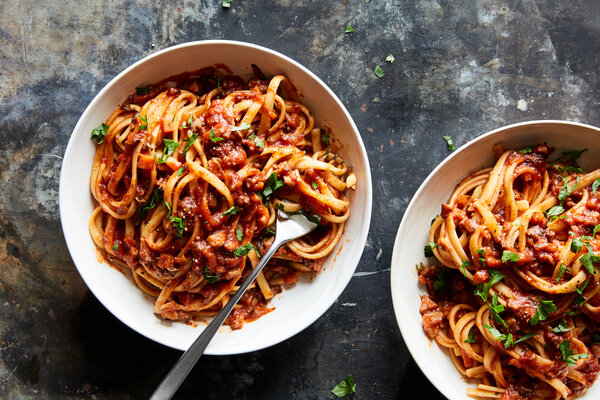

Bolognese
Spagetti Bolognese

Everyone needs a great everyday Spaghetti Bolognese recipe,
and this is mine! The Bolognese Sauce is rich, thick and has beautiful depth
of flavour. It’s perfect for a quick midweek meal though if you have the time
to simmer this Meat Sauce for a couple of hours, you’ll take it from seriously
delish to OMG this is amazing!!
Ingredients
- 2 pounds lean ground beef
- 1 large white onion, diced
- 1 large portobello mushroom, diced, or more to taste
- 2 (14.5 ounce) cans petite diced tomatoes
- 3 (10 ounce) cans condensed tomato soup
- ½ cup Worcestershire sauce
- 1 ½ tablespoons garlic and herb seasoning blend
- 1 tablespoon lemon juice
- 1 tablespoon minced garlic
- ¼ cup chili powder
- 3 tablespoons Cajun seasoning
- ½ teaspoon dried basil
- ¼ teaspoon black pepper
- ½ teaspoon salt
- 1 (16 ounce) package spaghetti
- 1 ½ tablespoons extra-virgin olive oil
Directions
- Cook the ground beef in a large pot over high heat,
stirring quickly and constantly until completely browned 7 to 10 minutes.
Stir the onion into the beef; cook and stir until the onion begins to turn translucent,
about 5 minutes more. Drain excess grease from meat mixture. Add the mushroom to the mixture;
allow to cook until it begins to soften, 1 to 2 minutes. Pour the diced tomatoes and tomato soup
into the pot, stir, reduce heat to medium, and bring the mixture to a simmer.
- Add the Worcestershire sauce, garlic and herb seasoning blend, lemon juice, garlic,
chili powder, Cajun seasoning, basil, black pepper, and salt to the mixture,
stirring each into the mixture before adding the next.
Reduce heat to low and allow the mixture to simmer for 30 minutes.
- Bring a large pot of lightly salted water to a rolling boil.
Add the spaghetti and olive oil to the pot and cook the pasta at a boil until
cooked through yet firm to the bite, about 12 minutes.
Drain. Top with the Bolognese sauce to serve.
Back